在这篇文章中，我试图给微积分中的某些量下一个尽可能普遍和精确的定义．譬如：定积分，曲线的长度，曲面的面积．
若尔当（Jordan）在他的《分析教程》（Cours d’Analyse）的第二版中，对这些量做了较为深入的研究．尽管如此，在这本书的帮助下，我还需要对这些量进行研究，原因在于存在着不可积的导函数（这里的积分指的是黎曼定义下的积分）．在这种定义的积分下，并不是所有情况下我们都能解决积分学的基本问题：如何在其导数已知的情况下找到这个函数．
看上去，找到另外一种积分的定义，使得在最一般的情况下，积分成为微分的逆，这似乎是很自然的事情．
另外，正如若尔当所述，对于一个切平面不连续变化的曲面，其面积并无定义．我们希望接受的一些类似于曲线长度定义的命题却并不成立[1].因此，这是一个很好的理由去寻找一种面积的定义，同样地，也可以改进长度的定义，以便这两个定义尽可能的相似．
在有关实变函数问题的研究中，经常这样认为：对于一定的点集，或能赋予其具有线段的长度或多边形的面积之特性的数量将是很有用的．但是对于这些被称之为“测度”的数量，已有不同的定义[2]被提出，其中最常用的是若尔当著作中提出并研究的定义．
在第一章中，根据波雷尔（Borel）的结果，我从集合的根本性质出发定义了集合的测度．在对波雷尔文[3]中给出的粗略定义进行了加强和提炼之后，我指出了这种测度的定义是如何与若尔当的定义相联系的．我所给出的定义适用于多维情形．从平面上的点形成的集合的测度，可以定义平面区域的面积概念；如果这些元素是通常的三维空间中的点，类似地，可以定义体积概念，等等．
一旦这些准备工作完成，没有什么可以阻止我们将连续函数的积分定义为平面上某区域的面积．实际上，这种方法的好处在于可以使我们将有界不连续函数的积分定义为某个确定点集的测度．这就是我将于第二章中给出的几何定义．在一个注记中，这个定义可以由分析的定义替代，在这种情况下，积分将作为一系列和的极限而出现，这在很大程度上类似于黎曼的定义．适用这种几何定义的函数，我称之为“可和的”．
据我所知，还没有不可和的函数，但它们是否存在，尚未可知．任何一个可用算术运算和极限过程定义的函数是可和的．所有的黎曼可积函数均可和，而且这两种不同的定义得到的结果是一致的．任何有界函数都是可和的．
一个有界函数的积分，如果看成积分上限的函数，则就是所给导函数的原函数．因此，当所给函数有界时，积分学的基本问题就从理论上得到了解决．
为了得到更一般的结论，积分的定义必须能用到无界函数上去．虽然这样的定义很容易找到，但在我看来最简单和最自然的定义并不能用到所有的无界函数上去，所以对于无界函数，针对所有的情况，原函数的问题并不能完全解决．按照我所给出的定义，我发现：一个导函数，其积分存在的充分必要条件是其原函数有有界变差．一旦这个积分存在，那么原函数就显而易见．
积分的实际计算很大程度上依赖于所给出的被积函数．当函数用级数的形式定义，则下述性质可以利用［这是奥斯古特（Osgood）书中[4]一个特例］：一个级数，其各项均可积，且级数的余部有一个小于给定数的绝对值，则该级数的积分可通过逐项积分得到．
就这一点而言积分的定义也可扩展至多变量函数．
在第一章中，我扩展了线段长度的一般性概念；另外还推广了曲线长度的概念．在第三章中，我对这一概念进行处理，给出了下述定义：曲线C的长度就是一致地趋向于曲线C的折线长度的下极限．这个定义基本等同于经典定义[5].一条有有限极限的曲线被称为可求长的．我随即重新获得了若尔当关于这类曲线的一些主要结果．
对于一条有切线的曲线长度表达式的寻找导致了前一章中定义的积分的新的应用．若f′，φ′和ψ′存在，则曲线
x=f（t）， y=φ（t）， z=ψ（t）
可求长的充分必要条件是 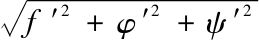
在第四章，我将曲面L的面积定义为那些一致趋向于L的多面体表面积之下极限．由此，可类似于将曲线的长度定义为内接折线长度的极限那样导出面积的定义．
用一个双重积分来表示面积这一课题只在曲面的切平面是连续变化的情况下才能被讨论．我重新得到了经典积分
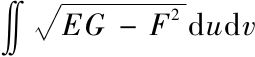
．最后两章致力于不同的研究，并提出了一些例子，用来看看这些扩展后的“长度”和“面积”概念是否需要对曲面几何中相关命题和观点进行相应修改．因为这些观点一般情况下都是基于曲面和曲线是解析的这一假设，或者至少是用具有一定阶数的导数的函数来定义的．
我给自己提的第一个问题是如何找到一个曲面，使其可以与平面贴合．这就意味着要找到一个和平面上的点一一对应的曲面，这样一来，长度就得以保存．但是我发现，一方面存在着可以贴合于平面的曲面，而曲面上没有直线段，另一方面也存在着挠曲线，它的每一点都有一个密切平面，而它所有的切线组成的曲面不能对应于平面．我所采用的基本过程并没有说明是否所有的曲面都能与平面贴合，但这些让我清楚地知道了对于柱面、锥面、挠曲线的切线组成的曲面以及旋转曲面与平面贴合的充要条件．最终，一旦它们贴合平面，其面积就得以保留．
第二个问题是拉格朗日（Lagarnge）和普拉托（Plateau）曾经提过的：给出一个固定的轮廓，找到一个以此为边界的曲面使其面积最小．我发现这个问题是可能的，而且允许有无限多个解．
弄清楚这些解中的曲面是否是解析曲面是很有意义的．但是，我一开始就想到的方法却难以为用，这种方法包括了在用偏导数表示的极小曲面公式中必不可少的各阶导数的存在性证明．然而，一些最基本的观点帮助我对一个特殊的情形证明了解曲面之一切平面的存在性．
在最后一章，我所采用的方法与希尔伯特[7]重新开始的黎曼对狄利克雷问题的研究方法类似．希尔伯特的结果以及我所获得的都清晰地展示了，至少在目前这个时候，抛弃由变分法计算得到的偏微分方程，而去直接求积分的最小值，是完全有价值的工作．
这篇文章的一些主要结果已在Comptes rendus de l′Académie des Sciences上的几篇文章中宣布过．（1899年6月19日和11与27日，1900年11月26日和12月3日，1901年4月29日）
§1.一个集合被称为有界的，若集合中任意两点间的距离有上限．两个集合被称为等价的，若将其中一个重新排列，就可以使二者完全一致．给出集合E1，E2，…，则和集E由那些至少属于其中一个Ei的元素组成．我们只考虑有限个或可数个Ei，记
E=E1+E2+…，
如果E2中点都是E1中的，我们说E1包含E2，而E1中不属于E2的元素的集合称之为E1与E2之差（E1-E2）．需要说明的是若E2包含E3，且E1、E2和E3有相同的部分，则集合
E1+（E2-E3）和（E1+E2）-E3
是不同的．
给出以下定义．
给每个有界集对应一个正数或0，称之为测度，若其满足下列条件：
1.存在着测度不为0的集合；
2.两个等价的集合测度相等；
3.有限个或可数个互不相交的集合，其和集的测度等于每一个测度之和．
我们将只对所谓“可测的”集合研究解决“测度问题”．另外，解决这一问题有着不同的目标，这取决于我们将问题局限于哪一方面，是直线上的点，还是平面上的点，或是其他．要弄清这些区别，我们需要说明是线测度，还是面测度，或是其他．
需要注意的是一旦测度问题有了一个解决方案，那么我们就能得到另外一种测度体系，其中的测度是通过将所有已有的测度与同一个数相乘而得到．我们认为这新测度与原来的解决方案并没什么不同，由此，不失一般性，我们可以将任一非零测度定为测度1．
§2.假设测度问题可以解决．单点集的测度为0，因为一个含有有限个点的有界集应该有一个有限测度．因此作为点集的线段MN，无论是否包含端点M和N，测度不变．进一步，MN的测度不会为0，除非所有有界集的测度都为零．
选择一段线段MN，设其测度为1.如果我们将MN取为单位测度的线段，则对于任意线段PQ，就可以定义对应的数字即它的长度，这也是PQ点集的测度．需要说明的是如果PQ的长度是l，且l可测为
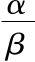
，则存在着线段RS是PQ的α倍，MN的β倍．若l不可测，则对于每一个小于l的数λ，对应着PQ上的一个线段，其长度为λ；对于每一个大于l的数λ，也对应着一条包含PQ的线段，其长度为λ．为了满足测度问题的第三个条件，一条可以看作是有限或无限条互不重叠的线条之和的线段，其长度亦必为这些线段长度之和．
上述长度的性质在组成线段是有限的情况下成立，但有时甚至在无限时也成立．（参见Lecons sur la Théorie des fonctions，Borel著）
§3.给定集合E，用有限个或可数个区间来覆盖E有无穷多的方法．所有这些区间构成的点集E1包含E；则E的测度m（E）至多等于E1的测度m（E1），也就是说，E的测度至多等于上述的区间长度之和．这个和的下极限就是m（E）的上极限，称之为E的外测度，记为me（E）．
假设所有E中的点都属于线段AB，称AB-E为E关于AB的补集，记为CAB（E）．由于CAB（E）的测度至多等于me［CAB（E）］，则E的测度至少等于m（AB）-me［CAB（E）］.这个数值并不依赖于选择的包含E的线段AB的长度．我们称其为E的内测度，记为mi（E）．两个等价的集合有着相等的内测度和外测度．进一步，因为
me（E）+me［CAB（E）］≥m（AB），
故外测度从不小于内测度．如果有关测度的假设成立，那么E的测度就在我们所定义的外测度me（E）和内测度mi（E）之间．
§4.我们称那些外测度和内测度相等的集合为可测集合[8]，它们的数值就是这个集合的测度．我们所给出的那些测度的条件，如果用m（E）（只能是可测集）去验证，确实满足．
对于可测集E，还可以这样定义：集合E被称为可测的如果它允许α个区间将其覆盖，其补集允许β个区间覆盖，这样一来它们的公共部分的长度要多小有多小．不管是有限多还是可数多个集合E1，E2，…，我们来证明它们的和集E可测．
假设所有的集合Ei都是线段AB上的点，取其补集．将E1用α1个互不重叠区间覆盖，集合C（E1）用β1个区间覆盖，α1和β1的共同部分长度设为ε1；对E2用α2个区间覆盖，C（E2）用β2个，公共部分为ε2，设α2和β2与β1的公共部分为α′2和β′2；和E3对应的是α3和β3以及数字ε3，α3和β3与β2的公共部分为α′3和β′3；接下来是第四个，一直进行下去．
E中的点可以用区间α1，α′2，α′3…来覆盖，而C（E）可用β′i来覆盖．现在这两列区间的公共部分的长度至多为
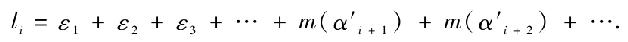
级数∑m（α′i）是收敛的．因此选择合适的εi，使级数∑εi收敛，其和为ε，对足够大的i，可以使li小于2ε.因此E是可和的，因为有限多或可数多个可和集合的和集也是可和的，这和可测集的情况类似．如果E1，E2，…没有公共点，则Ei中的点被α′i个区间覆盖，而m（α′i）-m（Ei）至多等于εi.现在，
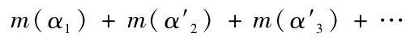
减去m（E）的值小于
ε1+ε2+ε3+…，
因此，有
m（E）=m（E1）+m（E2）+….
这样一来，测度问题的第三个条件就满足了．
§5.于是，测度问题对于可测集而言是可以解决的，而且只允许一种解答，这是因为我们定义集合外测度和内测度时所使用的论证，只有应用于可测集才能使之发挥应有的作用．
现在我们还不能说明一旦一个集合的外测度和内测度不等，测度问题的条件不能满足．但接下来我们碰到的都只是可测集．事实上，我们用来定义集合的步骤可缩减为下面两步：
1．找到有限个或可数个已被定义的集合的和集；
2．考虑有限个或可数无限个给定集合的公共部分．
将这两步作用于可测集，仍可得到可测集．第一步我们可以办到，下面来证明第二步．
给定集合E1，E2，…，所寻找的集合ei可定义为E1，E2，…补集的和集的补集，这就证明了命题．
ei是个类似于e1的集合，和集合列Ei，Ei+1，…相关．ei的和集由所有Ei的公共元素组成，而这些Ei至少是从某一个固定的i值开始，一直变化下去．由于ei是可测集的和集，因此也是可测集．
对于第二个步骤，还有一个应用．当E1包含E2时，若E1-E2是E1和C（E2）的公共部分，且E1和E2均可测，则E1-E2也可测．另外，还有
E1=（E1-E2）+E2，
m（E1-E2）=m（E1）+m（E2）.
§6.我们已经认识了可测集合（由一个区间上的点形成），因此可以通过有限次应用前述两个步骤，来定义一些新的集合．又这种方法得到的这些集合，其补集正是Borel所称的可测集（称为Borel可测，简记为B可测）[9].这些集合以可数无穷多种情况来定义，而且包含它们的集合有着连续统的基数．关于这些集合，需要指出的是，它们是一些区间之和且为闭集，也即那些包含其导集[10]的集合，其补集为一些区间之和．
集合E，其元素由下列横坐标上的点组成的：
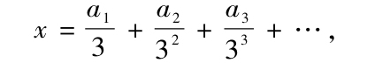
其中，ai等于0或2.称其为“完备集”（perfect），E是B可测的．它的补集由1个长度为
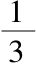
的区间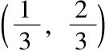
、2个长度为的区间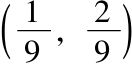
和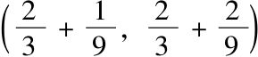
、4个长度为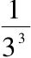
的区间等组成，因此其测度为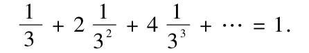
那么当然E的测度为0.由于E有一个连续统的基数，则可以形成无穷多个由E中的点组成的集合，且由于每个外测度为0，故均可测．由这些集合组成的集合，其基数与E中所有点集的集合相等，因此存在着可测的却不是B可测的集合，这些可测集合组成的集合，其基数与E中所有点集的集合相等．
§7.设E是一个可测集，选择一列数字ε1，ε2，…趋近于0.可以用αi个可数无穷多个测度为m（E）+εi的集合来覆盖E.由α1，α2，…个集合中相同的元素组成的集合E1是B可测的，其测度为m（E），且包含E.集合E1-E的测度为0，它可以用βi个区间覆盖，这βi个区间包含在αi个区间中，且测度为εi.所有βi个区间中相同的元素组成的集合e是B可测的，测度为0.取E2=E1-e，该集合是B可测的，测度为m（E）；使得每一个包含E1的集合都包含E2，且E1和E2都是B可测的，测度相等．因此我们称为可测的集合均是按照Borel的程序可测的（参见Borel书中48页尾部的注记）[11]．
类似地，可以将集合E的外测度看做包含E的可测集的测度的下极限，这样，就存在着包含E的B可测集，其测度为me（E）．同样地，mi（E）为包含于E的可测集的测度的上极限．因此存在着一个B可测集，它包含于E，测度为mi（E）．
§8.在其进行计算的尝试中，若尔当给出下述定义：点M称为E的内点，若它在一个线段上，该线段上的点均为E中的点．E的边界集是那些既不在E中也不在C（E）中的点组成的集合．
将包含E的线段AB分成若干区间．设那些所有的点都在E中的区间长度之和为l，那些含有E中的点或含有E边界的区间长度之和为L.可以看出，当改变分割AB的方法，使得小区间的最大长度趋近于0时，l和L趋近于给定极限，即E的内延量和外延量．由此定义，外延量至少等于外测度，内延量至多等于内测度．若尔当称这些外延量和内延量相等的集合为可测集，我们称之为若尔当可测（J可测），因此，这些集合也是我们所定义意义上的可测，这两种定义是一致的，都可以被接受．实际上，E的内延量就是E的内点集的测度，因为它是开集[12]即不包含任何边界，故其补集是闭集，是B可测的．外延量是E和其边界集的和集的测度，是闭集，因此是B可测的．因此一个集合是J可测当且仅当其边界集测度为0．
一个以外延量为其测度的闭集，当其测度为0时，我们可以说它是J可测的．特别地，§6中定义的“完备集”为J可测的；所有由它们的点做成的集合也是J可测的．因此J可测的集合组成的集合与由这些集合的点组成的集合有着相同的基数，并且存在J可测但B不可测的集合．
§9.对于给定的集合，我们定义了测度，我们剩下要做的是研究如何计算这个数字．显然这和确定集合的方式有着极大关系．
假设，对于给定的区间（a，b），我们知道在（a，b）中是否有E中的点和E的边界点以及是否含有C（E）中的点．接着，通过一系列有限的操作，我们可以计算出两个序列（一个是递减的，一个是递增的）的任意多项，其极限就是E的外延量和内延量．处理级数的一般方法让我们明白所谓的内延量和外延量定义的合理性．
因此，我能够计算J可测集合的测度，同时考虑这两个序列则允许我们给出在任何一项停止计算时所产生的误差的上限．
对任意一个集合，要计算它的me（E）和mi（E）是很困难的．因为实际上这些数字的定义涉及不可数无限多个数，为了找到一列趋向于me（E）的数，我们必须考虑如何将包含E的线段AB分成若干区间，而这种划分恰恰依赖于集合E．
如果一个集合是B可测的，且是基于一列区间定义的，通过我们已经指出的两个步骤，根据测度问题的第三个条件以及以下性质，很容易计算出集合的测度：集合E与可测集E1，E2，…（前一个包含后一个）的公共部分，其测度是数列m（E1），m（E2），…的下极限．
实际上，C（E）正是所有那些没有公共点的集合
C（E1），［C（E2）-C（E1）］， ［C（E3）-C（E2）］，…
的和集，因此，
m［C（E）］=m［C（E1）］+m［C（E2）-C（E1）］+…，
m（E）=m（E1）+［m（E2）-m（E1）］+….
§10.上述讨论无疑可以推广到多维空间中的点集；我们将限于讨论平面情形．类似于§2的讨论，我们会发现直线上的点组成的任何有界集，其面测度为0，而正方形上的点组成的集合，其面测度不为0.所以，首先，我们要定义一个测度为1的正方形MNPQ．
初等几何中寻求三角形面积公式的论证表明，三角形点集的测度恰好等于量度其底边和高度所得数值的乘积的一半．取MN为单位线段．
因此，要定义三角形的测度，必须将三角形测度看做组成它的不重叠的三角形测度之和．阿达玛（Hadamard）在《初等几何》（Géometrie élémentaire）的一个注记D中证明，这是可能成立的，若那些组成三角形数目有限．数目无限的情况将与直线上点集的情况（参见Borel，Théorie des fonctions，42页）类似地得到讨论．
§11.现在我们可以像§3那样类似地给出定义．
集合E的外测度me（E）即为那些覆盖E的三角形测度和的下极限（无论有限还是无限）．由于E在三角形ABC之内，因此由定义，有
CABC（E）=（ABC）-E.
同样由定义，内测度mi（E）为
mi（E）=m（ABC）-me［CABC（E）］.
若一个集合，这两个定义的数值相等，则称该集合可测，这个相等的数即为测度．
如同§4那样，我们可以指出：测度问题是可能解决的，当我们只考虑可测集时，则只有唯一的解决方法．当我们对可测集采取类似于§5的两个步骤时，依然得到可测集．当对平面上三角形中的点集重复这两个步骤有限次时，我们所得到的集合以及与之相关的补集，被称为是B可测的．
设E为开集，即每一个属于E的点M都在E内．那么，相应于M，可以找到一个以M为中心的正方形，其边平行于给定的直线方向，并定义其为所有的点都在E内的正方形中最大的那个．由于E是那些与两个坐标都为有理数的点相应的正方形的和集，因此E是B可测的．
一个闭集的补集是开集，因此每一个闭集也是B可测的．我们也像在直线上那样定义集合的外延量和内延量，将在直线上进行的有限个线段的覆盖替换为有限个正方形的覆盖，这样就能得到J可测的概念．
所有这些集合和数值之间的关系和我们前面遇到的名称相同的集合和数值的关系是一样的．
§12.我们知道，所谓“平面曲线”就是由下述两个方程
x=f（t）， y=φ（t） （1）
给出的点集，其中，f和φ是定义在有限区间（a，b）上的连续函数．对于每一个t值，都有一个与之对应的点，其两个坐标分别是相应的x值和y值．因此，曲线可以定义为点集，并且是完备集[14].如果同一个点有不同的t值与之对应，称该点为重点．对于一个没有重点的曲线，知道了曲线的点集就足以定义曲线了，因为我们并不认为曲线（1）和用函数θ（t）代替t得到的曲线有什么不同，不管这函数是递增还是递减．
一条曲线称为闭曲线，若它除了唯一的一个两重点t=a和t=b没有其他的重点．我们认为该曲线是用其点的集合来定义的．给出这样一条曲线，它将把平面分成两个部分，曲线的内部和曲线的外部．[15]
我们将没有重点的闭曲线C的内部称为“区域”．C是这个区域的边界，区域本身是个开集．我们说一个区域D可以看做若干有限或无限个区域D1，D2，…之和，若每一个属于D的点属于其中唯一的一个Di或者至少是Di的边界．
§13.我们对每一个区域给出一个称之为面积的正数与之对应，它满足两个条件：
1.等价的区域面积相等；
2.有那些有限或无限个区域构成的区域，其面积等于这些区域面积之和．
这就是所谓的面积问题．
如果这个问题可能解决，尽管有无穷多种方式，那么经过有限步可以定义一个正方形MNPQ，其面积为1.由初等几何中众所周知的推理可以证明矩形面积为两个邻边长度的乘积，取MN为长度单位，即得该矩形的单位面测度．
作为一个开集的区域，正如我们已看到的那样，是可数无穷多个互不重叠的矩形之和．因此它的面积为这些矩形面积之和，亦即区域看作是点集的面测度．
取D1和D2为两个无公共点但有唯一的公共边界αβ的两个区域．区域D，作为区域D1和D2以及边界αβ（除了α和β）点集的和集，其测度为这三个集合的测度之和．显然，这三个集合都是可测的，因为前两个是开集，第三个是从α到β的曲线段（除去了点α和β），是完备集．为了满足面积的第二个条件，曲线段αβ的面测度必须为0．
有关面积问题的条件能得到满足，当且仅当区域边界的面测度为0．
我们称这类区域为“可方区域”（squarable domain），面测度为0的曲线为“可方曲线”．
设可方区域D为可方区域D1，D2，…之和．区域D中的点构成的集合包含了无公共点的区域D1，D2，…中的点，且没有一个Di是0测度，它们至多有可数多个．由于边界的面测度为0，因此在计算区域D的面积时可以被忽略．
对于可方区域，面积问题是可解的，并且一旦设定了面积单位，那么满足条件的解唯一．
§14.现在假设对于有关面积的第二个条件可以做如下修改：
一个由两个区域之和构成的区域，其面积为两个区域面积之和[16].继续使用前面曾用过的论证，我们将看到，区域D的面积介于其外延量和内延量之间．由此，可方区域的面积也能得到很好的定义．
被一条不可方曲线C所限制的不可方区域D的面积，介于数值m（D）和m（D）+m（C）之间．[17]
现在我们来说明，按照这样的陈述，面积问题对不可方区域而言是不确定的．我们需要基于以下性质：当两个区域D1和D2有公共边界弧αβ，我们可以找到包含αβ的区域D（或许不含α和β）使得或者每一个包含在D1中的D的点也在D2中，反之也成立；或者每一个包含在D1中的D的点不在D2中，反之亦然[18].前一种情况，D1和D2在αβ的同侧，后一种情况，D1和D2在αβ的异侧．
对于无重点也不可方的弧曲线αβ，设其为区域Δ边界的一部分．设一区域D，其边界为C.C和αβ有公共弧线（忽略不在该弧线上的公共点，如果存在的话）．设E是这样一些特殊弧线的集合，沿着这些弧线，D和Δ在αβ的同侧．设E1为不具备上述性质的弧线的集合．一次性地选定一个0和1之间的数θ，区域D的面积定义为
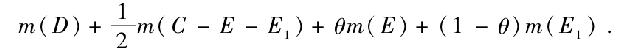
容易看出，按这样定义的面积满足本章一开始陈述的面积问题的条件2.[19]
概而言之，面积问题只是对可方区域而言可能解决并得到合适的面积定义．前述类似的论证也可应用于通常三维空间区域的体积，并可推广到更一般的多维空间的区域．
Ⅰ.单变量函数的定积分
§15.从几何的观点来看，积分问题可以这样陈述：
对于一条由方程y=f（x）（f是连续的正的函数，且坐标轴为直线）确定的曲线C和给定的横坐标值a和b（a<b），求由C的一段、Ox轴的相应部分和平行于y轴的两条直线围成的区域的面积．
这个面积就被定义为f在a和b之间的积分，记为
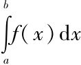
．为了求抛物线弓形的面积，阿基米德对特殊情形解决了这个问题．在一般的情形，经典的方法都是用两边平行于x轴和y轴的小矩形来对该区域进行划分，然后估算区域的内延量和外延量．为了得到这些小矩形，首先确立平行于Oy轴的直线，接着将这些带形用平行于Ox轴的线段进行分割，这些线段的y坐标随着带形依次变化．为了计算一种延量，如果必须考虑这样形成的所有矩形R之一R1，那么为了计算同一延量，就必须考虑同一带形中位于Ox轴和R1之间的所有矩形R.这些延量因此就是那些底线在Ox轴的矩形面积之和的极限．
取δ1，δ2，…为这些底边的长度，取m1，m2，…和M1，M2，…为相对应的区间上f的极小值和极大值．假设δ的值已经给定，即平行于Oy轴的直线已经确定，选择平行于Ox轴的线段以获得尽可能地逼近延量的近似值，由这些近似值，我们得到
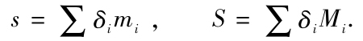
由此，我们知道如何来计算区域的两种延量；如果能证明这两个数值相等，那么我们给自己提出的问题就是有意义的，而且知道如何解决问题．
对于任何种类的有界函数f，达布（Darbox）证明[20]，这两个和s和S都趋向于确定的极限，即所谓的“不足积分”和“过剩积分”．当这两个积分相等（不只限于连续函数）时，由黎曼[21]的说法，这两个共同的极限被称为f定义在从a到b的区间上的积分．
§16.为了从几何上来解释这些数值，设对于定义在区间（a，b）上的每个正函数f指定点集E，其元素为坐标满足下列条件的点：
a≤x≤b， 0≤y≤f（x），
则可以清楚地看到，两个和s与S近似于集合E的内延量和外延量，因此s和S具有适当定义的极限，即内外延量．这样，从几何观点来说，不足积分和过剩积分的存在乃是一个有界集内外延量存在的结果．对于一个函数f，其可积的充分必要条件是E是J可测的，且E的测度即为积分．
对于任意符号的函数f，我们可以定义与之相对的集合E，其中的元素是坐标满足下列不等式的点：
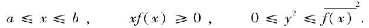
集合E可以表示为由y值大于0的集合E1和y值小于0的集合E2组成的和集[22].此时，不足积分就是E1的内延量减去E2的外延量，过剩积分即为E1的外延量减去E2的内延量．如果E是J可测的（同样E1和E2也J可测的），则函数是可积的，积分为m（E1）-m（E2）．
§17.这些结果立刻可以进行一般化：若集合E可测（E1和E2同样可测），我们可称量m（E1）-m（E2）为f定义在区间从a到b上的积分．相应的函数f称之为可和的．
对于不可和函数，如果存在，我们可以定义下积分和上积分等于
mi（E1）-me（E2）， me（E1）-mi（E2）.
这两个数值介于不足积分和过剩积分之间．
§18.我们现在可以解析地定义可和函数．
由于E是可测的，故它被包含于集合E′，并包含集合E″；此时E′和E″都是B可测的，且有测度m（E）（§7）．另外，由给出这一结果的讨论，可以认为E′和E″是由基于Ox轴的平行于Oy轴的线段构成的，也即对应于两个函数f1和f2（f1≥f2）．
取e、e′和e″是由E、E′和E″中坐标y值大于给定数m>0的点构成的集合；e、e′和e″均可测，且测度相等．取s、s′和s″是这些集合中由直线y=m+h所截取的部分；s′和s″是线上B可测的，且当h趋于0时m（s′）和m（s″）无减小．设S′和S″是其极限，现证它们相等．事实上，若不然，对足够小的h，有
m（s′）≥m（s″）+ε.
而且，可以找到这样的足够小的h1和h2（h1≤h2），使得
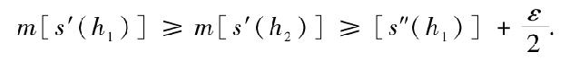
若e′1和
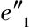
是e′和e″内被包含在y=h1和y=h2之间的点，有：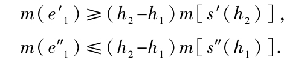
因此m
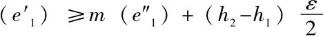
，这是不可能的，因为e′1和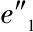
有着同样的测度．因此s′和s″有着同样的线测度且s是可测的；即，使得f（x）的值大于数m>0的x的值的集合是可测的．类似地，使得f（x）的值小于数m<0的x的值的集合也是可测的．
这个结果意味着使得f（x）的值小于等于数m>0（大于等于m<0）的x的值的集合是可测的．因此，满足a≥f（x）>b>0或者0>c>f（x）≥d，或者e≥f（x）≥g（eg>0）的点组成的集合是可测的．而且，若b趋向于a或d趋向于c或e和g趋向于0，则使y取给定值的点集也是可测的．扼要来说，不论a和b取什么符号，若f可和，则满足下式
a>f（x）>b
的x值的集合是可测的．
§19.反之，对任意的a和b，如果满足a>f（x）>b的x的集合是可测的，且函数f（x）有界，则f（x）是可和的．
事实上，将f（x）的变化区间分割成若干个小区间：设a0，a1，a2，…，an为分割点．
取ei（i=0，1，…，n）为满足f（x）=ai的x的值组成的集合．
取e′i（i=0，1，…，n-1）为满足ai<f（x）<ai+1的x的值组成的集合．
所形成f（x）的点集E对应于属于x值ei的那一部分，构成了平面上测度为|ai|·ml（ei）（ml（ei）为线测度）的可测集．E中对应于e′i的那部分，包含测度为|ai|·ml（e′i）的可测集，同时包含于测度为|ai+1|·ml（e′i）的可测集．
因此，E包含测度为
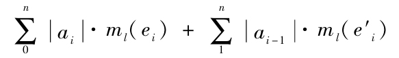
的可测集，且包含在测度为
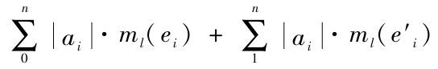
的可测集中．
这两个测度值之差小于（an-a0）α，在这里α表示我们给出的ai-ai-1的最大值，因此，可以进行适当的选择使得这两个测度尽可能地接近．那么E是可测的，因此f是可和的．
进一步，由于我们知道了如何去计算E的测度，因此，若f是正的，其积分就等于这两个和
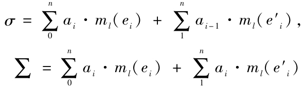
的共同极限，此处ai-ai-1趋近于0．
现在，若f不恒为正，由σ和Σ的正数项的和给出的极限是我们称之为集合E1（§16）的测度，而负数项部分的极限则给出了-m（E2），因此，在所有情况下，σ和Σ定义了积分．
§20.也许，分析的论证有助于我们考虑可和函数并说明什么是我们所称的可和函数的积分．
设f（x）是一个定义在α到β（α<β）的连续递增函数，且变化范围从a到b（a<b）．对于x，确定值
x0=α<x1<x2<…<xn=β，
与之相应的f（x）的值为
a0=a<a1<a2<…<an=b．
通常意义下的定积分就是下述两个和
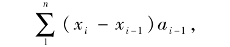
的共同极限，且此时xi-xi-1的最大值趋向于0．
但是若ai已经给定，xi也会确定；同样地，当ai-ai-1趋近于0时，xi-xi-1也趋近于0.因此，为了定义连续递增函数f（x）的积分，我们需要选取ai也即对f（x）的变化区间进行分割，以便代替取xi即对x的变化区间进行分割．
来看看如何进行这一过程，首先考虑最简单的连续函数情形，即在任意一个区间上变化且只有有限个最小值和最大值情形；接下来是任意连续函数，这样就容易将我们引导到一般性质．设f（x）是定义在（α，β）上的连续函数，且在a和b之间变化．任取函数值
a0=a<a1<a2<…<an=b；
对于闭集ei（i=0，1，…，n）的点，f（x）=ai.对于区间e′i（i=0，1，…，n-1）和集的集合中的点，则有ai<f（x）<ai+1.设ei和e′i均可测．
当随着ai个数的递增，ai-ai-1的最大值趋近于0时，下面两个量
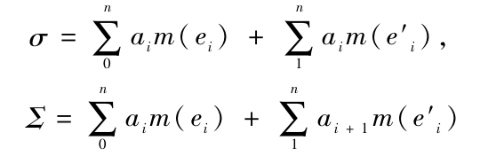
趋近于
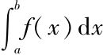
．一旦得到了这种性质，我们就可以将其作为函数f（x）的积分定义．不过除了连续函数，量σ和∑对于其他的可和函数也有意义．我们需要证明对于这些函数，σ和∑有着独立于ai的选取的相同极限，这个极限也将被定义为f（x）在α和β之间的积分．
当在ai中间添加新的分割点时，σ不会减少，∑也不会增加，因此σ和∑极限存在．由于∑-σ至多等于（β-α）乘以（ai-ai-1）的最大值，故它们相等．
现在设有对f（x）值域的新的分割bi，取σ′和∑′为对应于σ和∑的值．取σ″和∑″为同时使用ai和bi的分割的相应值．则由下列两个不等式
σ≤σ′≤∑″≤∑′，
σ′≤σ≤∑″≤∑，
可以证明这6个和数σ，σ′，σ″，∑，∑′和∑″有着同样的极限．
这就证明了积分的存在．如果这种方法（说法可能偶然会有一些不同），它与黎曼关于积分的定义有无冲突并不是不证自明的．为了证明这一点，我们需要依据以下事实：一个可积函数，其不连续点构成的集合，测度为0[23].取f（x）为可积函数，E为满足
a≤f（x）≤b
的点集，此处a和b是任两个数．E′的边界且不属于E的那些点，是不连续点，它们形成了一个测度为0的集合e.由于它是闭集，E+e可测，故E可测．因此，可以断定f可和．
如果在一个长度为l的区间上，函数f的最大值为M而最小值为m，积分（按我们所赋予的意义）将介于lM和lm之间．进一步，若a1，a2，…，an是递增的数，那么
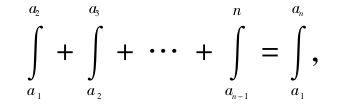
这里所有的积分都是按我们所赋予的意义．
这个结果意味着可和函数的积分被包含在不足积分和过剩积分之间，特别地，当两种积分都可适用时，二者的定义是一致的．
§21.在限a和b之间的积分只有在a小于b时才有定义．我们将通过等式
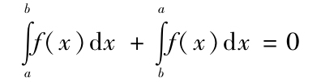
来完成定义．
结果得到
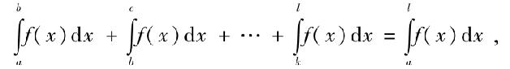
此处a，b，…，l任意．
因此，我们还需要弄清这样一个概念，即函数f的积分只定义在集合E中的点上[24].若AB是包含E的线段，定义一个函数φ，它在E上等于f，在CAB（E）上等于0.f在E上的积分可以定义为φ在AB上的积分．显然，我们所定义的积分并不依赖包含E的线段AB的选取．
设E是E1，E2，…的和集，其中E1，E2，…均可测且无公共点，若f在E上可和，那么
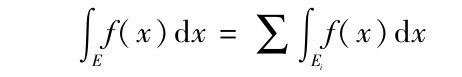
成立．
现在，我们可以将一个函数f的下积分定义为不大于f的可和函数φ积分的上极限．存在着这样的函数φ其积分等于f的下积分．类似的讨论也可应用于上积分．
§22.现在，我们来证明将初等算术运算应用于可和函数产生新的可和函数．
f和φ是取值在m和M之间的两个可和函数．对区间（m，M）进行分割，分割点为
m0=m<m1<m2<…<mn=M，
此处，i=1，2，…，n，取ei为满足mi-1<f≤mi的x的取值集合，e′j为对应于φ的同样性质的集合．
取eij为ei和e′j中共同点组成的集合．对每一个这样的集合，有
mi-1+mj-1<f+φ≤mi+mj，
eij，ei和e′j都是可测的．
取a和b是任两个数．设E为eij中包含在a和b之间的点集的和集，E可测．
无限地增加数mi，使得mi-mi-1趋近于0.我们将获得无穷个可测集合E，其和集是x的取值集合，满足
a<f+φ<b，
因此，f+φ可和．
f的积分是f在集合eij上的积分之和，因此，有
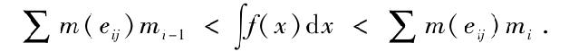
类似的，有
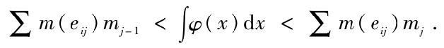
同样的，关于f+φ，有：
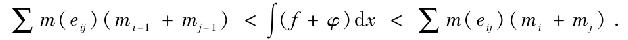
由此，可得
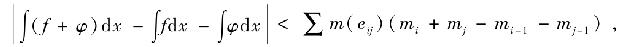
因此
∫（f+φ）dx=∫fdx+∫φdx.[25]
这一性质可以被总结为：任意可和函数之和也为可和函数，其积分为积分之和．
类似的，可以证明，两个可和函数之积也是可和函数；若一个可和函数满足不等式
0<m<|f|<M，
则其倒数也为可和函数；一个可和函数的m次算术根，若根存在，也可和；若f和φ均为可和函数，且f（φ）有意义，则f（φ）也可和，如此等等．
更重要的是下面的推论：若有界函数f为一列可和函数fi的极限，则f可和．
事实上，取ei为使相应的fi包含在a和b之间的x的取值集合，所有ei的公共点组成集合e，则至少从某个i开始，该集合为满足f在a和b之间的x的取值集．由于ei可测，故e可测，f可和．
§23.我们刚刚获得的结论可以帮助我们定义一类重要的可和函数．
我们的结果要基于以下事实：y=k和y=x是可和函数，因此，kxm可和，多项式函数可和．
由魏尔斯特拉斯定理，我们知道每一个连续函数都是一列多项式函数的极限，因此连续函数是可和函数．但是也存在着不连续函数为多项式极限的情况，Baire研究了这类函数，他称之为“第一类函数”．（Sur les functions des variables réelles，Annali di Matematica，1899.）因此，第一类函数是可和函数，第一类函数或第二类函数的极限也为可和函数，等等．所有Baire所称的构成函数集E的函数（loc.cit，70页）是可和函数．
这个结果给我们提供了大量的不连续以及黎曼不可积却可和的函数例子．进一步，我们可以按下述方法得到这一类例子．用我们在§20对每一个可积函数都可和一样的论证可以证明：如果在撷取一个测度为0的集合之后，还有另外一个集合，函数在其点上连续，那么，该函数是可和的，因此，若f和φ是两个连续函数，定义函数F如下：在测度为0的集合E之外的点，F等于f；在E中的点上
F=f+φ，
则F是可和的．现在，如果φ恒不为0，且E在每一个区间上稠密，则其每一个点都是F的不连续点，因此F是黎曼不可积的．
这一过程让我们可以构成一个可和函数集合，其基数等于函数集的基数．
§24.在这一章一开始讨论时采用的几何方法是建立在有界集的测度之上的，也只能用于有界函数[26].相反的，在§20中提到的分析方法则可应用于绝对值无上限的函数而无需实质性的改变．
一个函数被称为可和的，若对任意的a和b，满足
a<f（x）<b
的x的取值集合是可测的．迄今我们关注的只是有界可和函数，现在来讨论它们与无界可和函数的区别．
设f（x）是可和函数，选取一列数
…<m-2<m-1<m0<m1<m2<…
在-∞和∞之间变化，且mi-mi-1的绝对值有一个上界．取ei为对应于f（x）等于mi的x的取值集合，e′i为对应于mi<f（x）<mi+1的x的取值集合．
考虑下列两个和
σ=∑mi·m（ei）+∑mi·m（e′i），∑=∑mi·m（ei+1）+∑mi+1·m（e′i），
在这里，∑其实是包含两列级数的和，一列是正的，另一列是负的．这些级数可能收敛，也可能不收敛．如果出现在σ中的级数是收敛的，即有意义的，那么∑也是有意义的；反过来也是如此．而它们正确与否与mi的选取无关．
就像在§20讨论的那样，我们可以看出，当不断增加mi以使mi-mi-1的最大值趋近于0时，两个和σ和∑趋近于同一个极限，且独立于mi的选取，这个极限正是积分．
甚至当对“可和函数”和“积分”的意义进行扩展之后，到目前为止所有的命题都依然成立[27].但必须要说明的是，一个无界的可和函数并不一定必须有一个积分存在．[28]
§25.在计算一个给定集合的测度时遇到的问题，同样出现在计算给定函数的积分上．
迄今为止，几乎大多数在微积分中遇到的不连续函数都可以以级数形式定义，因此了解下面的定理是有意义的．
若对一列可和函数f1，f2，…，其积分存在；这列函数有一个极限f，且|f-fn|（n任意）小于定数M，则f有一个积分，其积分为函数fn的积分的极限[29]．
实际上，我们有
f=fn+（f-fn）．
因为等式右边的两个函数都有积分，因此f也有积分，这个值等于fn和f-fn的积分之和．现考察第二个积分的上限．
选择一个固定的正数ε，若en是x的取值集合，使对于任意的正数p（或0），有
|f-fn+p|<ε，
则en是可测的．
若E是可测集，且在其上积分存在，有
|∫（f-fn）dx|≤M·m（en）+ε［m（E）-m（en）］.
现在每一个en包含着更大指数的集，且所有的en没有公共点．因此，m（en）随
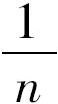
趋近于0，所以对|∫（f-fn）dx|
有同样的事实成立．
当f有界时，这个结论可这样表述：当一列绝对值有上界的可和函数f1，f2，…有一个极限f时，f的积分就是fn积分的极限．
在一般情形下，这个定理可以表述成另外一种形式：
一个收敛的可积函数项级数，其余部绝对值有上界时，这个级数逐项可积．
作为一种特殊情况，我们可以得到关于一致收敛级数的积分的定理．
§26.需要说明，一个在（α，β）上有定积分存在的函数f（x）的不定积分，可以表示成定义在区间（α，β）内的函数F（x），使对无论怎样的a和b（包含在（α，β）内），有
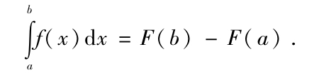
由此等式，可得
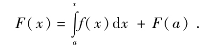
因此，任一个有着定积分的函数，将产生无穷多个不定积分，它们之间只相差一个常数F（a）．
若函数有界，则显然其不定积分是一个连续函数[30].为了证明这一点在一般情况下也成立，让我们回到§24的记号．选定a，一旦h的绝对值小于定数，会得到
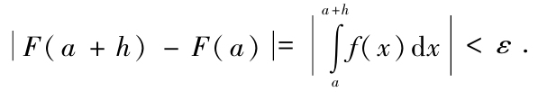
为简单起见，可以取h为正数．
至多存在可数无穷多个mi，使得与之对应的集合ei具有非零测度．因此，可以假定mi不包含在这些特殊值中，即可假定m（ei）=0，使其可以简化σ和∑.
所以，若取m0=0[31]，有
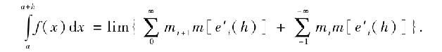
e′i（h）表示e′i包含于a到a+h的那部分．考虑固定的数组mi，则等式右边的两个级数将仅随着h的变化而变化，可以设h取得足够小，使得这两个级数的有限项的绝对值能够任意小．因此，可以将h取得足够小，使得这两个级数，其中一个只有正数项而另一个只有负数项，都有一个足够小的绝对值．
不过进一步取极限时，需要在已选择的mi中添加新的成员，这一步骤将使得这两个级数之绝对值递减．这就证明了
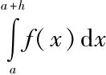
要多小有多小．于是，不定积分确实是连续函数．§27.如果M和m是f（x）在区间（a，a+h）内的最小值和最大值，则有
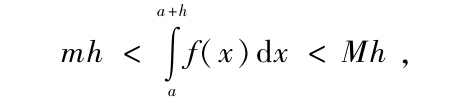
因此
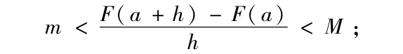
于是对于x=a，若f（x）在该点连续，F（x）在该点的导数等于f（a）．
若f（x）在任意的x值都连续，则F（x）是以f（x）为导数的函数中的一个，即f（x）的原函数之一．
对于连续函数，寻找它的原函数就等同于寻找这个给定函数的不定积分．这个众所周知的结果在处理黎曼可积的导函数时依然成立[32].但仍然有黎曼不可积的导函数[33]，一旦给出这样一个函数，就不能用黎曼积分来计算原函数．
我们将看到，任一个有界导函数都有一个不定积分作为其原函数之一．因此，我们可以计算一个给定有界函数的原函数（如果存在）．
对于无界的导函数，我们需要证明，如果它们有积分，那么其原函数就等于它们的不定积分．
§28.函数f（x）的导数是当h趋近于0时，下述表达式
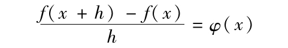
的极限．这里由于h是固定的，所以表达式是一个连续函数．因此，导数是一个连续函数的极限，且可和．
设f（x）的导函数的绝对值恒小于M.由有限增量定理φ（x）=f′（x+θh），函数f（x）在其定义的集合上有界，于是有结果
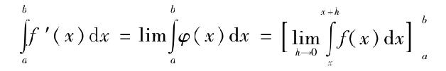
以及
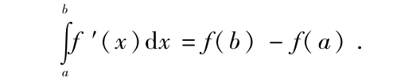
任意一个有界导函数有一个原函数作为其不定积分．这个结果对于导函数左有界或右有界的情况依然成立；同样对于当h趋近于0，φ（x）的极限趋近定值时，也成立．
§29.对前面结果的应用，我们要讨论一下按下述方式定义的函数是否有原函数．
取E为在（0，1）区间上每一部分都不稠密的闭集，测度不为0.取（a，b）为与E邻接的区间[34]，c为该区间的中点．则函数
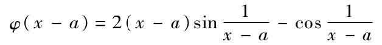
在a和c之间有无穷多个零点．取a+d为a和c之间最靠近c的点，且函数在该点值为零．
我们所关注的函数f（x），它在E中的每一点都为零，而在每一个与E邻接的区间（a，b）上，在a和a+d之间为φ（x-a），在a+d和b-d之间取0，在b-d和b之间为-φ（b-x）．
这个函数在每一个与E邻接的区间上连续，在E中每个点不连续，且均为第二类不连续点．
进一步，f（x）介于-3和+3之间．为了确保f（x）有原函数，首先要得到区间（0，1）上的定积分．这个积分，如果存在，等于在E上的积分加上在区间C（E）上的积分（假设它也存在）．而E上的积分存在，等于0；C（E）上的积分也存在，因为它是那些邻接E的区间上的积分之和，而这些积分均为0．
由此可得函数F（x）．它在E中的所有点均为0，而在邻接E的区间（a，b）上定义如下：
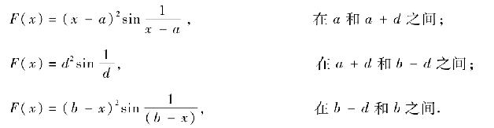
F（x）等于∫f（x）dx．
因此，若f（x）的原函数存在，F（x）是其中之一．
对所有f（x）连续的点，即对C（E）的所有点，显然有：
F′（x）=f（x）．
设a是集合E内的点，若a是邻接E的区间的端点，且在a的右边，F（x）显然有一个导函数，其右边值为0.假设在a的右端，有无穷多个E的点，且以a为极限点．若αi是这些点之一，对于大于αi的x值，下述比值
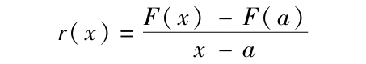
的绝对值小于
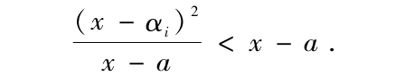
于是，当x趋近于0时，比值趋于0．
故在E的所有点上，F（x）有导数，其右边为0，且同样可以看到一个左侧为0的导数．因此对任意包含在0和1之间的x，有
F′（x）=f（x）．
因此，函数f（x）是导函数，且黎曼不可积．这是因为，函数不连续点的集合有非零测度．
这个黎曼不可积函数的例子来自于Volterra的Giornale de Battaglini，第19卷[35]．
§30.我们刚才找到的原函数，具有有界变差[36].我们将证明：一个可微函数导函数（有界或无界）的不定积分存在的充要条件是这个函数具有有界变差．如果这样，则这个函数就是其导函数的不定积分之一．
因为f′（x）可和，所以为了计算它的积分需要继续我们在§24的做法．设所有的ei测度都为0，且进一步取m0=0；这是可能的，如果用对f（x）+Kx的讨论来代替对所给函数f（x）的讨论，这里K适当选取．
对应于每一个e′i的点x0，可以选择区间（α，β），使得如果有
α<a≤x0≤β，
就有
我们可以将（α，β）的区间长度取得尽可能大使之最多等于给定的数σ，并以x0为区间的中点．
若mi-mi-1总小于η，则（b-a）r（a，b），等于f′（x0）（b-a）而不会等于η（b-a）．
取Ei（σ）是对应于e′i的点的区间之和，则Ei（σ）可以被认为是互不重叠的区间之和．设（a，b）是这样的一个区间，若
a<α<β<b，
则有
mi<r（α，β）<mi+1
成立，只要在α和β之间至少有一个e′i的点存在．
Ei（σ）包含e′i.让σ趋近于0，取x0属于无穷多个集合Ei（σ）中的一点．f′（x）是对应于包含x0的区间Ei（σ）的比值r（α，β）的极限．因此，x0是ei、e′i或是ei+1中的点．于是，由无限个Ei（σ）中的公共元素组成的系列Ei，与逐渐趋近于0的σ值相关，包含了e′i和ei+ei+1的点．因此它同e′i有着相同的测度．进一步，由于每一个Ei（σ）都包含了对应于足够小的σ的集合，m（Ei）就是m［Ei（σ）］的极限．
因此，可以选择一列数
…σ-2，σ-1，σ0，σ1，σ2，…
使得和式
尽可能地小．
按以上所说，让我们注意：∫f′dx和∫|f′|dx同时存在，由此，如果级数
收敛，即
收敛，则∫f′dx存在．
在组成Ei（σi）的区间中，可以选择有限个，使得这些区间A在V中的贡献当V发散时变得足够大，而当级数收敛时则能尽可能的接近V的值．现在去掉适量的区间A而不改变区间的和集，同时使得没有一个留下的区间包含在其他留下的区间内．那些被消除的区间在V中的小于D．
考虑两个和e′i、e′j相对应的互有重叠的区间（ai，bi）和（aj，bj）．设
ai<aj<bi<bj．
在aj和bi之间，不可能存在同时属于e′i和e′j的点，除非r（aj+ε，bi-ε）同时包含在mi和mi+1之间以及mj和mj+1之间．因此，在aj和bi之间可以找到一个点c，使得在aj和c之间有一个e′i的点，在c和bi之间有一个e′j的点．于是，有
|f（c）-f（ai）|+|f（bj）-f（c）|=（c-ai）|r（ai，c）|+（bj-c）|r（c，bj）|．
因此，左半部分，即当考虑分割
ai c bj
时f（x）在ai和bj之间的变差，等于两个区间（ai，bi）和（aj，bj）在V中的贡献减去量（bi-aj）|mj-mi|+η（bj-ai）．量（bi-aj）|mj-mi|小于区间（aj，bi）在D中的贡献．
沿着同一思路，考虑一列递增的有限个数值x0，x1，x2，….区间A在V中的贡献减去和式∑|f（xi）-f（xi+1）|得到的值小于D+ηm（A）．现在，这个和式小于f（x）的全变差．因此，V的极限即∫|f′|dx小于或至多等于f（x）的全变差．这就是说，若f（x）具有有界变差，则∫|f′|dx存在且小于f（x）的全变差．
§31.现在假设∫|f′|dx存在．
将ei中的点装进可数无穷多的区间Ai，将m（Ai）选择的尽可能小．对应于ei的每一个点x0，都有一个长度小于σ′i的最大区间（α，β）并以x0作为它的中点，且包含整个Ai，使得
α<a≤x0≤b<β，
并有
mi-εi<r（a，b）<mi+εi
成立．
设ei（σ′i）是这些区间之和，只要选择合适的σ′i和ε′i，和
可以要多小有多小．
每个Ei（σi）或ei（σ′i），都是可数无穷多个互不重叠的区间之和．若f（x）是定义在区间（a，b）之内，则每一个在（a，b）内部的点至少属于这些区间之一，且以a和b作为区间端点．因此，根据一个集合论定理，我们可以在组成Ei（σi）和ei（σi）的区间中，选择有限个区间B，使得任意在（a，b）内的点都在B的一个区间内．
我们可以假设这种选择方式使得余下的区间绝不包含于其他余下的区间．没有用到的Ei（σi）中的区间在V中的贡献至多等于D+Di，其中Di为f′在集合ei（σ′i）上的积分．
在B上的讨论同样可用在A上，考虑分割
x0=a<x1<x2<…<xn=b，
则和∑|f（xi）-f（xi-1）|等于Ei（σi）余下的区间在V中的贡献减去D+D′+η（b-a）．
现在，如果两个连续编号的xi来自于属于某个Ei（σi）或ei（σ′i）的同一个区间，该区间可分解为一些长度至多为2σi或2σ′i的小区间，则对应这样一个分割的变差之和等于V减去2D+D1+D′+η（b-a）得到的值．现在通过加进这些新的点使得σi和σ′i的最大值σ足够小，我们可以使和∑|f（xi）-f（xi-1）|要多接近有多接近f（x）在（a，b）上的全变差．
由此，若∫f′dx存在，则函数f（x）具有有界变差，这个变差等于积分∫|f′|dx的值．
§32.因此我们就发现了|f′|的积分存在的充要条件，也明白其意义所在．
不过，前面的讨论也支持了另外的结果．让我们重新开始讨论，并把注意力集中在那些有正数指标的集合ei、Ei、Ei（σ）等上．
我们可以看到，函数f（x）在a和x之间的正全变差等于f′（x）再加上在其值大于0的那部分的积分，即积分
同样的，对于负变差，有
于是，
因此，对于给定函数f（x），我们知道如何判断它是否是某有界变差函数的导函数．如果是，我们也知道如何寻找它的原函数．
若f（x）有界，其原函数如果存在，必定具有有界变差，并且，我们就可以找到它们．
但是由我们所定义的积分，并不能知道一个函数是否有无界变差的原函数[37]．
§33.取函数f（x）为f（x）=，（x≠0）；和f（0）=0，f（x）连续但有无界变差．
事实上，
因此，变差之和为，是一个发散级数．该函数有导数f′（x）：
此处，x≠0，且f′（0）=0.因此，f′（x）给我们提供了一个无界可和函数却不可积分的例子，所以给定了f′（x），按照前述方法将不能找到f（x）．
注意到以下事实是有意义的：当正数在某点的邻域内变为无限时积分的经典定义使我们能够在知道f′（x）的情况下求得f（x）．这是因为在被积函数无界的情况下，我们所采用的定义并非经典定义的推广，只是二者在所有应用的场合都能够吻合一致．另外，很容易对积分定义进行一般化推广而使得经典定义和我们所采用的定义都成为这种一般化定义的特例．为了简化下面的定理，我们将保留以前采用“定积分”这一术语的意义，但将对不定积分概念加以推广．
我们已看到所有的不定积分均为连续函数．如果我们将这一性质看作为不定积分定义的一部分，则我们可以说
定义在区间（α，β）上的函数f（x），在该区间上有不定积分，如果存在着唯一一个函数F（x）（除了一个附加的常数外唯一），使得
对任意的a和b（a和b在α和β之间，且使等式右端有意义）成立[38]．
§34.一个导函数的不定积分总是其原函数之一，这是因为，原函数是连续的，且根据我们刚才的讨论，当右端有意义时，满足等式
因此，我们能够找到§30中的函数f′（x）的原函数．
不过，可以很容易找到没有不定积分的导函数例子．
取φ（x）是定义在0和1之间的可微函数，在0和1不为0，且φ（x）的导函数在（0，1）内的每个区间有界，但在以0或1为端点的区间上无界．
当φ′（x）已知，就可以找到φ（x），这是因为φ（x）是φ′（x）的不定积分且x=0时不为0．
现考虑一闭集E，它在（0，1）的每一部分都不稠密，测度不为0.［例如，可以考虑从（0，1）区间中除去一列无穷多区间而构成的集合，这些区间的中点均有有理横坐标，且区间的长度之和小于1.］
定义一个连续函数f（x），它在邻接E的区间（a，b）上定义为（b-a）2φ．因此，f（x）在E的所有点为0.这个函数可微，其导函数在E上为0，在邻接E的区间（a，b）的每点为（b-a）φ′．
这个导函数f′（x）不存在不定积分．事实上，若存在，其不定积分应为f（x）+c（c为常数）的形式．然而，令ψ（x）表示E在区间（0，x）内的点的集合的测度函数，设ψ（x）为连续函数，在邻接E的区间内为常数．因此f（x）+ψ（x）满足等式
其中，α，β为使等式右端有意义的任意数组．
我们所给出的定义恰恰不能说明f′（x）的不定积分存在．
寻找原函数的问题还没有完全解决[39]．
§35.令f（x）为连续函数，h是一列趋近于0的数值，且使
有极限．对应于正值的h，所定义的这一列数有上极限Λd和下极限λd，这两个极限是函数f（x）在x0点右侧变化时的极振幅．同样定义Λg和λg.这4个数均称为导数，对于某些问题，它们提供了和导数同样的作用[40]．
接下来的问题是：已知某函数的一个导函数，求这个函数[41]；这正是我们刚刚处理的问题的一般化情形．
这个问题的某些特殊情形可用黎曼积分来解决（Dini，loc.cit）．我们所定义的积分，会使这个问题在更广的情况下得到解决，我们将仅限于如下的讨论．
首先，假如这四个数其中之一，比如Λd，是有限的，则该函数可和．实际上，让我们考查那些使Λd比某个固定数M大的x值的集合E.赋予h所有比ε1小的有理正数值，则对应于每一个值有一个函数=φ（x，h）．对应于φ（x，h）的，是一个可测集E（h），它由所有满足
φ（x，h）>M
的点组成．
令E（ε1）为所有E（h）之和，它是可测的．
对应于ε2，ε3，…，有集合E（ε2），E（ε3），…．
若ε趋近于0，则所有这些E（εi）的公共部分（可测），包含着我们所要找的集合以及满足Λd=M的点．所有这些足以使我们判定：函数Λd是可和的．
现在假设这4个导函数之一是有界的（对其余的3个数也可作同样处理）[42].Λd将会有一个积分．
考虑一列正的趋近于0的数h1，h2，…以及函数
对每一个x值，有一个对应的n，使得对i≥n，有
φ（x，hi）<Λd（x）+ε
成立．
令Ek为使n≤k的x的值集．相对于所考虑的区间的补集C（Ek）将有一个随着趋近于0的测度，且对该集合中的点，当M是Λd绝对值的上限时，有
|φ（x，hk）-Ad（x）|≤M．
因此[43]
计算第一项，得
当k无限增长时，这个量趋近于f（b）-f（a），因此，可以得到
同样的，可以得到
因此，若函数f（x）在右侧（左侧）的两个导函数有界，且积分相同，则它们的不定积分与f（x）只差一个常数．
§36.将所得到的结果扩展至多变量函数并没有什么困难．
函数f称可和的，若对于任意的a和b，满足
a<f<b
的点集可测．
连续函数在使它们发生变化的集合上可和．两个可和函数的和、积以及可和函数序列的极限，都是可和函数．因此，Baire所称的那些第一类、第二类等不连续函数，都是可和函数．
含有n个变量的函数，若按照每一个变量连续，则至多是n-1类函数[44]，因此也是可和函数．
令f为可和函数，考虑下面一组数：
…<m-2<m-1<m0<m1<m2<…，
其中，mi-mi-1有一个最大值η．
所有满足f=mi的点组成可测集ei，满足mi<f<mi+1的点组成可测集e′i．
两个和
σ=∑mim（ei）+∑mim（e′i），∑=∑mim（ei+1）+∑mi+1m（e′i）
同时有意义或无意义．
若同时有意义，则无论如何选择mi，这两个和在η趋近于0时有同一个极限．
这个极限就是f的积分．当f有界时，σ和∑有意义，每一个有界可和函数有积分．
先前讨论的定义可以用在那些定义在区域或点集上的函数，为了确保函数可和，这些区域或点集必须是可测的．令f是定义在可测集E上的有界函数，若f不可和，则有无穷多个有界可和函数φ，使得
f（x）>φ（x）
成立．令φ1（x），φ2（x），…为一列这样的函数，其积分趋近于φ函数积分的上极限．令ψ（x）为这样的函数，在每一点x0，其值为数列φ1（x0），φ2（x0），…的上极限．则很容易证明ψ（x）可和．其积分不小于函数列φi（x）的积分，且由于ψ（x）也是一个φ（x）函数，因此ψ（x）的积分等于φ（x）函数积分的上限．因此，给出一个有界函数f（x），就有一个不大于f的可和函数ψ，其积分是所有不大于f的可和函数的积分的上极限．这就是f的下积分．
上积分可以同样地定义[45]．
§37.我们来看看是否能将多重积分的计算简化为简单积分的计算．限制在两个变量的情形，我们试着来推广经典的公式：
我们必须检验的最简单的情形是f=1.然后我们需要将点集的面测度估算为其截线线测度的函数．用我们在§18和§19中建立的方法可以解决这一问题的一个特殊情形．
取E为平面可测集．将E中横坐标为x0的点的集合记为E（x0），即x=x0在E中的截线．如果存在非线可测的直线上的点集，E（x0）就不一定可测，这是因为直线上的每个有界点集沿着其所在的面可测．但是若E沿着所在面B可测，则E（x0）也是B线可测．现在我们知道E包含一个B可测的集合E1，其测度为m（E）．因此E1（x0）的测度至多等于E（x0）的内测度，也即至少等于x=x0时函数φ的下积分，这里φ在E中的点取1，在其他点取0.因此，
返回到§7，在那里我们证明了E1的存在性，我们将E1定义为一系列集合A1，A2，…的公共元素组成的集合．而集合Ai可以定义为可数无穷多互不重叠的矩形之和，这些小矩形的边都平行于x轴和y轴．Ai包含Ai，Ai+1，……．
现在，ml［Ai（x）］是x轴右侧组成Ai的矩形Cij的截线的测度之和．因此，有
在这个级数中，其余部的绝对值有一个上限，这是因为E1有界，而所有的Ai都在同一个有界区域内，其结果就是由ml［Ai（x）］组成的集合（和i及x有关）有界．因此这个级数是逐项可积的（§25）．
ml［Cij（x）］的积分就是Cij的面积，因此，
现在，当i趋于无限时，数ml［Ai（x）］和ms［Ai］的极限为ml［Ei（x）］和ms（E1），且由于这些数的集合是有限的，因此，有
因此，我们可以断定：
和
同样地，可以知道
由此，得到
对于只定义在可和集E（其截线可能不全可测）上的函数f=1，
函数关于x的积分可以扩展到集合e（集合E在y轴上的投影），而第二个积分可以扩展至集合E（x）．但这两个集合可能都不是线可测的．记号是指f扩展至一个包含集合A的可测集的下积分的上限．
前述的等式也可以写成：
§38.我们发现的表示的公式是一般化的法则，可以应用于所有的有界可和函数．
我们用φ（x，y）来标记这样一个函数，它在集合E中的点取值为f而在其他点取值为0.若E完全包含在方形OACB（两边OA和OB分别平行于Ox轴和Oy轴）内，则将要证明的法则等价于下列等式：
这也就是我们下面要证明的公式．
取m0，m1，…，mn为在φ（x，y）变动区间上的分割．用φp（x，y）来标记在ep（见§19注）取值为φ而在其他点取值为0的函数，用φ′p（x，y）来标记在e′p取值为φ而在其他点取值为0的函数．
则有
成立．dxdy等于mp·ep，且由前一节，可以得到
φ′p（x，y）dxdy取值在mpe′p和mp+1e′p+1之间．进一步，若我们用ψ来代替φ′p，而ψ在所有φp不为0的点取值为mp或mp+1，在φ′p为0的点取为0，则区间变动小于（mp+1-mp）m（e′p）．进一步，两个表达式
之间的差别也小于（mp+1-mp）m（e′p）．因此，除了一个小于2（mp+1-mp）m（e′p）的值，我们有
取η为mp+1-mp的最大值，则除了一个小于2ηm（OACB）的量，可以得到
现在，我们得到
因此，有
成立（无论η取何值）．
由这个不等式以及类似的有关上积分的不等式，结果就可得到前面所述的公式．
§39.若所给的函数是满足使所有e′p都是B可测的，在这种情形下我们可以说函数是B可和的，则公式可以简化为
这是经典的公式．我们知道，当我们涉及黎曼积分时，这一公式必须用另一个更为复杂的、类似于我们刚才得到而能应用于一般情形的公式来替代[46]．
在B可和函数中，我们可以挑出连续函数及连续函数的极限、第一类函数及第一类函数的极限或者第二类函数以及一般地所有的n类函数（n有限）．
特别的，可以将这个简单的经典公式用于n个变量的连续函数（关于每一个变量连续）．
这个公式同样可以用于函数f″xy和f″yx[47]，若它们存在并有界．因此，有
这个公式解决了在两个变量情况下寻找原函数的问题．
§40.前面的一些结果可以推广至无界函数情况．
一个无界不可和函数可以有一个下积分和一个上积分．无需重复前面的论证，我们知道必有
成立，无论公式中出现的积分是否有意义．同样的，经典公式
也成立．
为了试着这个一般化的结果可得到应用，需要添加一些容易辨别的、作为前提的条件．
这儿列出一些这样的条件，我们必须有
被采用的定义必须要将黎曼的定义作为其特殊情形．
在单变量和多变量之间，定义也不能有本质的区别．
最后，如果我们希望积分概念能让我们解决积分学的基本问题，即寻求一个导函数已知的函数，那么一个导函数的定积分，作为其上限的函数，必须是f的一个原函数．
我所采用的定义，至少对于被积函数是有界的情况，确实完全满足所有的条件．但是这些条件还不足以让我们定义一个有界函数（除非是黎曼可积函数与导函数的代数和）的积分而不用到第一章的方法[48].尽管并不能证明前述的定义就是唯一适合条件的定义，但我会指出，从几何的观点看，这是最自然而且几乎是必然会出现的一个．
我也将试图展示它的用途．事实上，它可以帮助我们解决所有有界可微函数情形下微分学的基本问题，因此也允许可微函数的积分并可归结为面积计算．例如，若f（x）是任一有界函数，我们可以知道方程
y′+ay=f（x）
是否有解，而且可能的话可以求出解来[49]．
在接下来的章节，我们将处理长度和面积的概念，在那里将发现积分的更多几何应用．
（李文林 杨显 译）
[1]参见Schwarz给Genocchi的信．此信见于平版印刷版的Cours professé à la Faculté des sciences（《理学院教程》），Ch.Hermite著，1882年第二学期，（第二次印刷，第25页）．亦可参见Atti della Accademia dei Lincei，Peano著，1890．
[2]这些定义，参见Jahresbericht der deutschen Mathematiker-Vereinigung，Schnflies著，1900．
[3]Leçons sur la théorie des Fonctions．
[4]American Journal，1897．
[5]Scheeffer，Acta Mathematica，5；Jordan，Cours d′Analyse．
[6]Mathematische Annalen，Bd 15，287页；Acta Mathematica，6．
[7]Nouvelles Annales de Mathématiques，1900年8月．
[8]为了使定义便于接受，我们修改了Borel的语言．
[9]Leçons sur théorie des fonctions，46~50页．
[10]这些集合正是Jordan所说的“完备的”和Borel所说“相对完备的”．这种集合包含其边界（稍后将定义）．
[11]然而，若一个集合E包含一个测度为α1的可测集E1的所有元素，则无论E是否可测，我们可以说其测度大于α1.我们这里的所用的“大于”和“小于”有时并不排除相等的情况．
[12]此种集合所有的点都在集合内部．
[13]Jordan，VolumeⅠ——J Hadamard，Géoméirie Elémentaire．
[14]区间（a，b）不会像在力学中经常发生的那样是无限的．
[15]Jordan，Cours d′Analyse，第二版，卷一．
[16]这正是Hadamard关于多边形的面积提出的问题（Geométrie Elémentaire，Note D）．
[17]存在着不可方曲线，这是因为存在着经过正方形所有点的曲线．为了找到一条无重复点的不可方曲线，我们只需要稍微修改希尔伯特在定义一条过正方形所有点的曲线时用到的方法（Mathematische Annalen38卷或Picard，Traité d'Analyse，第二版，卷11）．我们需要将希尔伯特定义中的每个正方形用其中一个多边形来代替，这种多边形的面积充分大，且每两个多边形的边至多只有一个公共顶点，而曲线经过这些点从一个多边形进入另一个多边形．
[18]这很容易证明．
[19]为使之成立，需要以下性质：若一个区域是区域D1和D2之和，则D1和D2有且仅有一条公共边界曲线，且除该曲线外别无公共点．
[20]Darboux，Mémoire sur fonctions discontinues，Annales de l′Ecole Normale，1873．
[21]黎曼，The Representation of Functions through Trigonometric Series．
[22]是否将x轴上的点考虑为E1和E2中的部分无关紧要．
[23]黎曼这样陈述这一性质：一个函数可积的必要条件是：其上变差大于σ（无论怎样取值）的区间之和可以变得无限小．
[24]我们可以首先在集合E内定义可和函数，然后和前面类似地定义它们的积分，只要撇除所有不属于E的点．
[25]如果我们介绍下积分和外积分的概念，我们将限于前述论证的第二部分．
[26]另外将点集的测度问题发展到所有集合，无论有界或无界，似乎并不困难．
[27]然而，对§22的第一个定理，需要一些解释．若f和φ可和，则f+φ也可和．但事实上，∫（f+φ）=∫f+∫φ成立，若∫f和∫φ有意义；不过∫（f+φ）有意义时，∫f和∫φ却不一定．
[28]对f在某些x的值变为无限的情况，仍然需要检验．若这些值都是有限数，那么为了使定理保持通常的形式，只需要将积分定义在排除了使f无限的x值的集合上．
[29]该定理最有意思的特例，即f和fi为连续函数的情形，已由Osgood在其关于不一致收敛的备忘录中得到（American journal，1894）．
[30]可能还要加上这一条：函数的变差有界．这个变差至多等于∫|f-fn|dx.证明类似于Jordan在Cours d′Analyse§81中所用的方法．这也解释了在§30、§31和§32中得到的结果．
[31]e0测度可能不为0，但这对下面的讨论并不重要．
[32]参见Darboux，Mémoire sur les fonctions discontinues．
[33]Volterra第一次给出了这类函数的实际例子（Giornale de Battaglini，卷19，1881）．
[34]这意味着，该区间不包含E中的点，但其端点属于E.——这来自Baire的解释．
[35]某些一致收敛的级数，各项类似于我们前面看到的函数，使得Volterra给出了在任何区间不可积的导函数的例子．对这些级数逐项求积能够得到原函数．
[36]这里将用到这些函数的一些性质（参见Jordan，Comptes Rendus de l′Académie des Sciences 1881和Cours d’Analyse，第二版，卷1）．这些性质大部分会在下一章中接着阐述，这样从§30到§35的内容本应放到那一章中．本书现在这样的安排使我们能够将与原函数有关的内容都集中在一起介绍．
[37]后面的结果是显然的，这是因为（§26，注）任一不定积分具有有界变差．前述证明显示，若函数f（x）无界且其导函数已知，为了使用类似于前述有界变差函数情形的方法求出f（x），级数中诸如∑mim|Ei（σi）|和∑mim（e′i）的各项须按一定次序排列．
下一节对不定积分概念的推广，将使我们得到这一结果的某些特殊情形，同时可以帮助我们求得无界变差函数的原函数．
[38]可以和若尔当给出的无界函数的不定积分定义（Cours d′Analys，第二版，卷2）比较．
[39]可以这样说，当我们将x的变化区间视为一个不稠密集E和与E邻接的区间（α，β）的集合之和时，问题可以解决，这里E可约，所述函数在每一个区间（α，β）有一个不定积分．
即使在E不可约的情况下，如果函数在E上可积且数列{F（β）-F（α）}绝对收敛，则问题也可以得到解决．这在前一个例子中是正确的，但一般来说则未必．
[40]参见Dini：Fondameni per la teorica delle funzioni di variabili reali．
[41]这个问题是有意义的，也就是说，所有具有同一个给定导函数的函数只相差一个常数．（Volterra，Sui prinicipii del Calcolo Integrale，Giornalede Battaglini，ⅩⅨ）
[42]因为若Λd介于A和B之间，则比值也将介于A和B之间．（参见Dini，Fondamenti，etc）
[43]为了使有意义，须将f（x）定义在（a，b+hk）上，若将f（x）在x大于b时定义为常值f（b）就足以做到这一点．
[44]参见勒贝格，Sur l’approximation des fonctions（Bulletin des Sciences Mathématiques，1898）
[45]所有这些条件都可以像一个变量的情形那样作几何解释．当有n个变量时，需要在n+1维空间中进行想象．
[46]参见Jordan（loc cit）56、57、58节．
[47]因为它们至多是第二类．
[48]这些方法类似于Drach所用的方法．（Essai sur théorie générale de l'Intégration—Introduction à l'Etude de la Théorie des nombres et de l'Algèbra supérieure）
这一部分，可以参见Borel著作48页注释1．
也可参见Hadamard，Géoméirie Elémentaire第一部分，注D．
[49]由此可引出一些有趣的问题．例如，若f（x）和g（x）都有界，那么是否方程
y′+f（x）y=φ（x）
的所有解都包含在经典公式y=中？